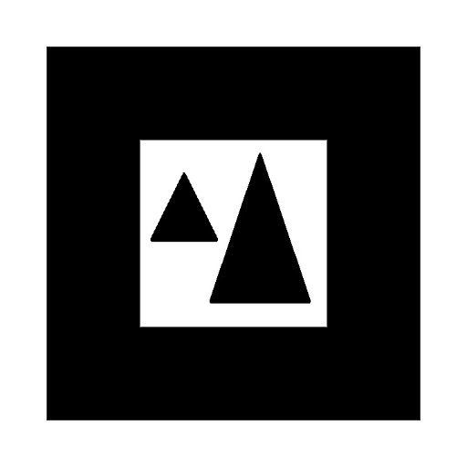
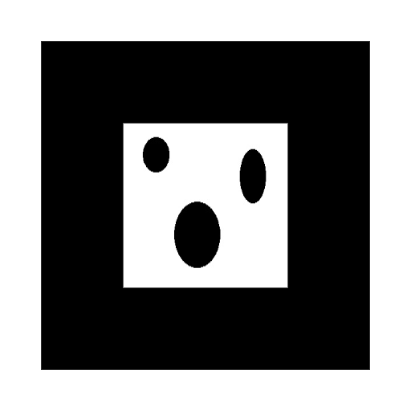

Elegí una opción:
Elegí una opción:
Debe haber uno de cada uno
Debes buscar estos marcadores para obtener el tesoro
-
Donde el hambre y la sed perecen
-
Donde se alberga gran conocimiento en papel

-
Donde antaño había una institución bancaria

-
El tesoro está protegido por 3 candados en el salón interdisciplinario de introducción a la ingeniería